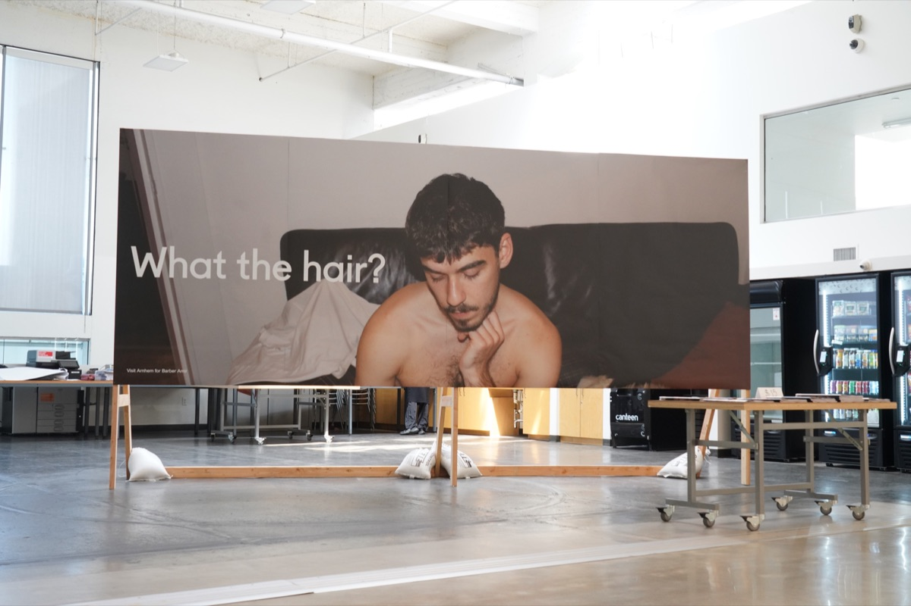
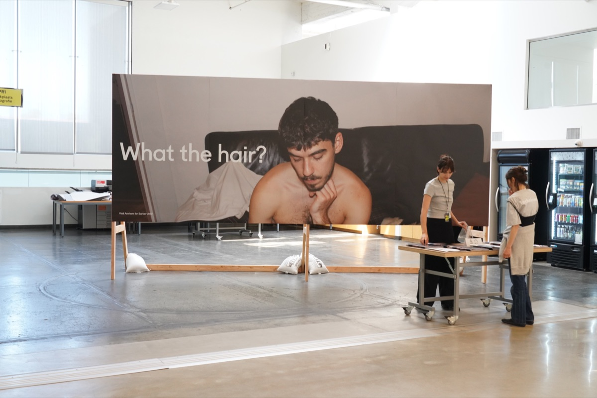

What the hair?
One of the 5.25 × 2 meter billboards created at Werkplaats Typografie for Visit Arnhem, portraying the city of Arnhem through the perspective of Barbershop Amir, a local barbershop. Presented at Printed Matter’s LA Art Book Fair, ArtCenter College of Design, South Campus, Pasadena, California, 2026.

